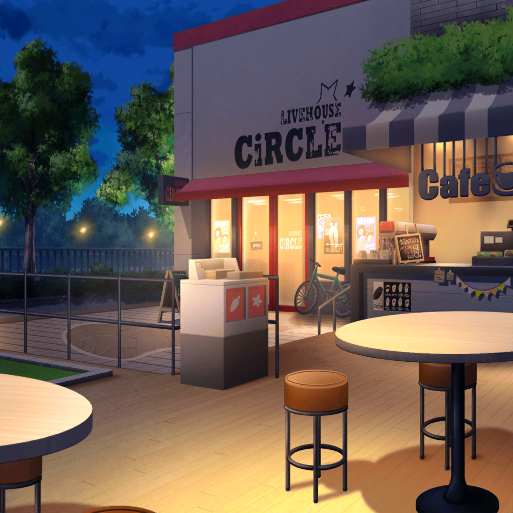
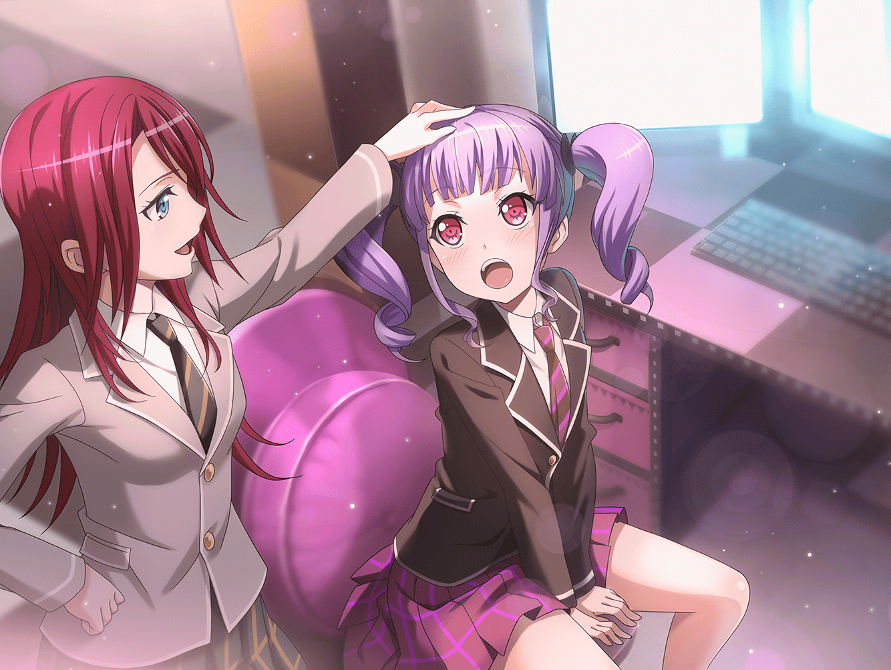

数日後
スタジオ
あこ
よ、よしっ。今日こそっ！
友希那さん、あのっ……
友希那
帰って
あこ
はぐっ！
数日後
あこ
今度はぜったい……
友希那さんっ！！ バンドに……
紗夜
そろそろ諦めてください
あこ
ぐぬぅっ！ 今日もダメぇ〜？
諦めないもんっ。あこ本気なのに……
なんで伝わらないのかなぁ？

宇田川家 リビング
あこ
ただいま〜。
はぁ……。もうやんなっちゃうよぉ。
りんりんに話聞いて貰おう……

白金家 燐子の部屋
燐子
あ。あこちゃんから……チャット……
あ……また……断られちゃったんだ……
燐子
『言葉だけじゃ、伝わらないのかもしれないね』
あこ
『？ じゃあどうしよ？』
燐子
『あこちゃんや私が、
友希那さんの歌を好きになった瞬間みたいに、
音で伝えられたら、いいのになって思った』
あこ
……音、で……
燐子
『私も、あの歌を聴いた時、すごいと思ったから。
あの感覚は、言葉だけじゃ上手く現せないと思う。
バンドって、そういう感覚で繋がるってことかなって』
あこ
……あ。……なんかちょっと……わかった……かも！
巴
ただいま〜。……ってあこ、その顔。
今日も不発だったみたいだな。
『あこだけのカッコイイ人とバンドやる作戦』は

あこ
あっ、おねーちゃーんっ、おかえり！
そーなのっ。とくに、ギターの紗夜……さんが
すっごい防御力なんだけど、認めてもらえるまで頑張るんだ！
巴
そうかそうか、頑張れよ……
って紗夜さん？
まさか、湊さんとバンド組んだっていう紗夜さんのことか？
あこ
え？ おねーちゃん知り合いなの？
巴
ははは。知り合いもなにも、あの人はうちの学校の高等部。
よく校内でもすれ違うよ。
あこのカッコイイ人って、湊さんか
あこ
そうなの！ ライブで見たときにビビビッて来ちゃって！
すっごくすっごくカッコイイんだ～
巴
湊さんなぁ……手強いだろうけど、応援してるぞ。
そういえば、知ってるか？
湊さんはうちのダンス部のリサさんの親友だ
あこ
……ええーーっ！！！！
リサ姉の『親友』の話、
あこ、よく聞いてるよーっ！！

数日後
羽丘女子学園 校門前
リサ
え！？ 友希那、今の話ってマジ！？
友希那
本当よ。バンドを組んだわ、紗夜って子と。
まだギターとボーカルだけだけど、
コンテストに向けて、新しい曲も出来上がってきてるわ
リサ
そっか……あははっ、なーんだ☆
教えてくれなかったからびっくりしたじゃん！
リサ
（いつか、こんな日がくるのかなとは思ってたけど、
……そっか。本当に、来ちゃったか）
リサ
友希那がついにバンドか〜。
アタシ以外とつるまないでひとりでいるからさ、
結構心配してたんだよね〜
友希那
リサ……。でも私は……本気だから。
私もその子も、FUTURE WORLD FES.に出たい、
目標が一致したから組んだだけよ
友希那
それにこれは、お父さんの……
リサ
ん。……わかってる。
目的は置いておいて……アタシは嬉しいよ。
友希那と一緒に、練習してくれる仲間ができたってことだし♪
リサ
でもさ、どーすんの？
FUTURE WORLD FES.のコンテストって
三人以上が条件じゃなかった？
友希那
……バンドを組むこと、止めないの？
リサ
友希那は、アタシが止めたら、やめるの？
友希那
リサ……
あこ
ゆ、友希那さん、お願いしますっ！！
リサ
ん？
あれ？ あこじゃん。どしたの？
友希那
……リサ、知り合いなの？
あこ
お願い！ お願いお願いお願いしますっ！
絶対いいドラム叩きます！ お願いします！！
リサ
……ちょっとちょっと。
話が見えないんだけどっ。あこ、ドラムやってるんだっけ？
友希那のバンドに入れてもらいたいの？
あこ
うん！ でも、何度も断られちゃって……
……どうしたらあこの本気が伝わるかなって考えて
それで……えっと……！
あこ
友希那さんの歌う曲、全部叩けるようになって来ました！
いっぱい、いっぱい練習してきて……！
その……
あこ
お願いです！ 一回だけ！
一回だけでいいから一緒に演奏させてください！
それで……それでダメだったらもう諦めるから！
友希那
何度も言ってるけど、……遊びじゃないの
リサ
（あっ……）
リサ
まぁまぁ、友希那。
いいじゃん、一回くらい一緒にやってあげなよ☆
……ほら……
あこ
わわわっ！
友希那
……？
リサ
あこの使ってるスコア……
こんなにボロボロになるくらい、
何度も何度も練習してるってことでしょ？
あこ
……っ！
リサ
ね？ 友希那。
あこのことは同じ部活だし知ってるけど、
やるときはやる子だよ？
リサ
（メンバーが揃うのは、いいことかわかんない。
でも、こんな本気になってるあこ、初めて見たから。
応援してあげたくなっちゃうよ……）
友希那
……はぁ。
……わかったわ。一曲セッションするだけよ
あこ
！ ほ、本当ですか！！
……本当！？ やったあ……っ！
リサ姉、ありがとう！
リサ
やったーっ☆
よしっ。ねえ、友希那！
アタシもセッション見学していい？
友希那
別に……いいけど。
どうしたの急に。
スタジオなんて、随分来てないのに
リサ
えっ。ど、どうって……別に〜？
ライブハウス以外で
歌ってる友希那も、たまには見たいじゃんっ？
リサ
そ、それに、紗夜って子がどんな子なのかも気になるしさ〜
友希那
……そう。好きにしたら
リサ
やったっ♪
リサ
（なんだろ？ アタシ……
今までは遠くから見るだけでよかったのに、
なんでこんなに友希那のバンドが気になるんだろ……）